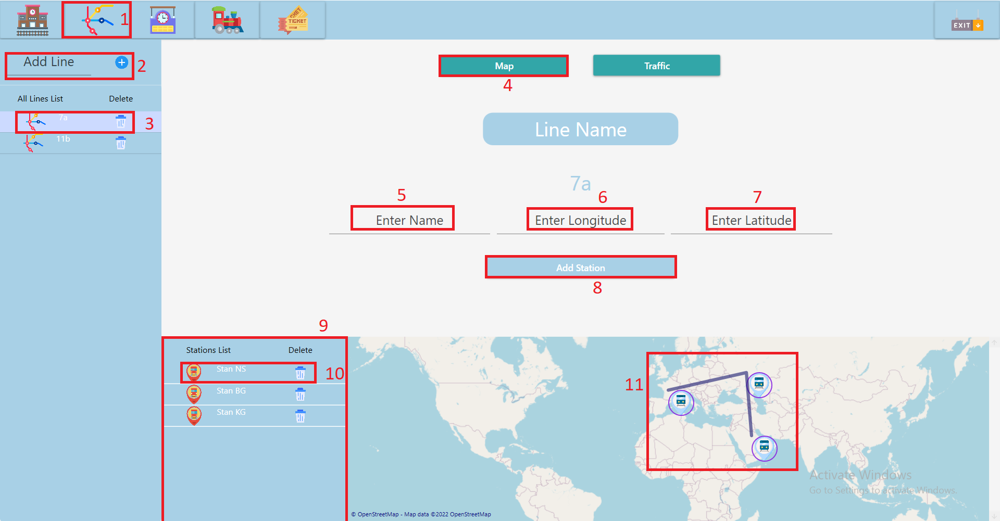

Prikaz Map stranice za manipulaciju linijama u sistemu:

1. Klikom na ikonicu mape se otvara Map page.
2. Dodavanje nove linije. Popunjavanjem teklstualnog polja(imena linije) i zatim klik na plus dugme.
3. Dvoklikom na ikonicu linije se otvara prikaz te linije.Liniju je moguce obrisati klikom na dugme kante.
4. Map page se automatski otvara.
5. Unos imena stanice.
6. Unos longitude koordiante stanice.
7. Unos latitude koordiante stanice.
8. Dodavanje nove stanice u liniju.
9. Prikaz svih stanica linije.
10. Brisanje stanice sa linije.
11. Prikaz svih stanica linije na mapi.